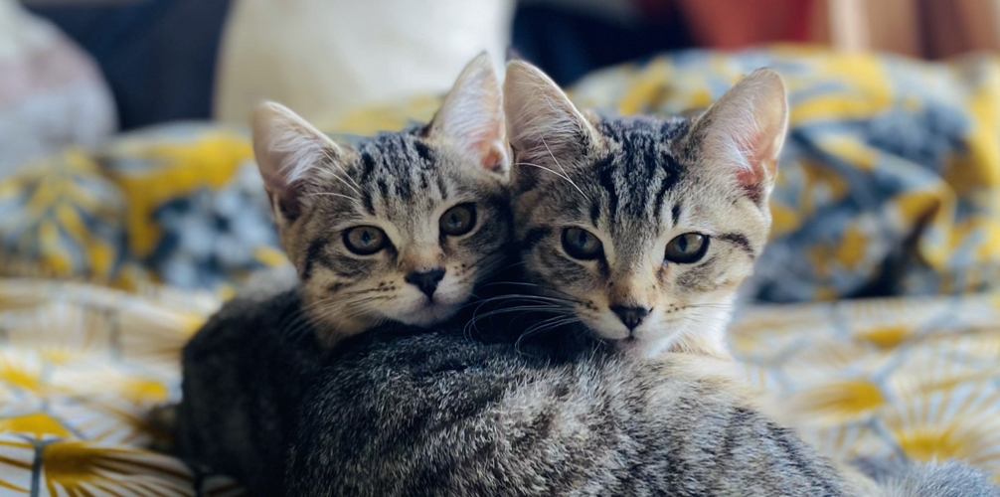

Sascha & Minty Fanclub
- Sascha's Profile
- Minty's Profile
- More Cats
This is a fan page for my 2 favourite cats
These are some really great cats. They kinda annoy me all day but they're also insanely sweet. Cute little guys. This is for other fans of the cats to come and talk about what they've been up to!

A range of cats in different situations!

Here you can see majestic Saschy WooWah!

Coyb! Little Minty is unfortunately an Everton fan.

Sleepy little Saschy! Meow! What a nice cat.

Another Everton cat! Poor bastards.
"Cats have very sweet features. It has two beautiful eyes, adorably tiny paws, sharp claws, and two perky ears which are very sensitive to sounds. It has a tiny body covered with smooth fur and it has a furry tail as well. Cats have an adorable face with a tiny nose, a big mouth and a few whiskers under its nose."
- Some Random Website
Find out more about the cats!
These are some good cats. Thanks for being such good cats!